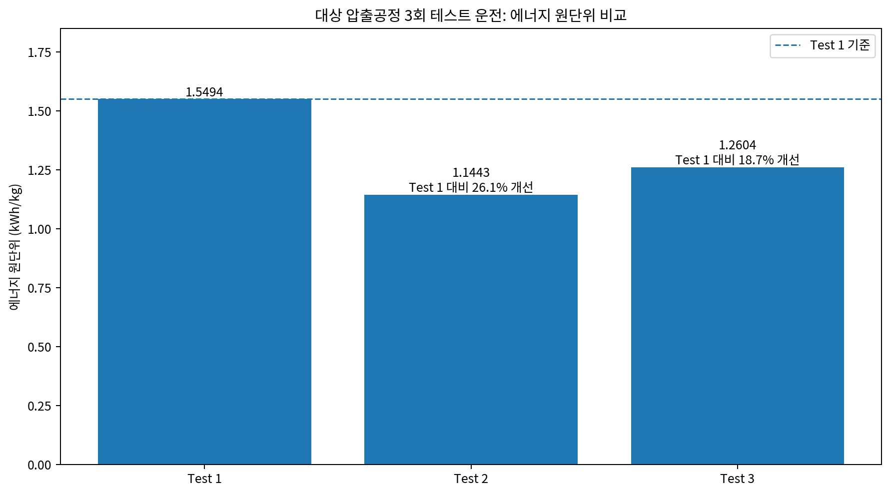
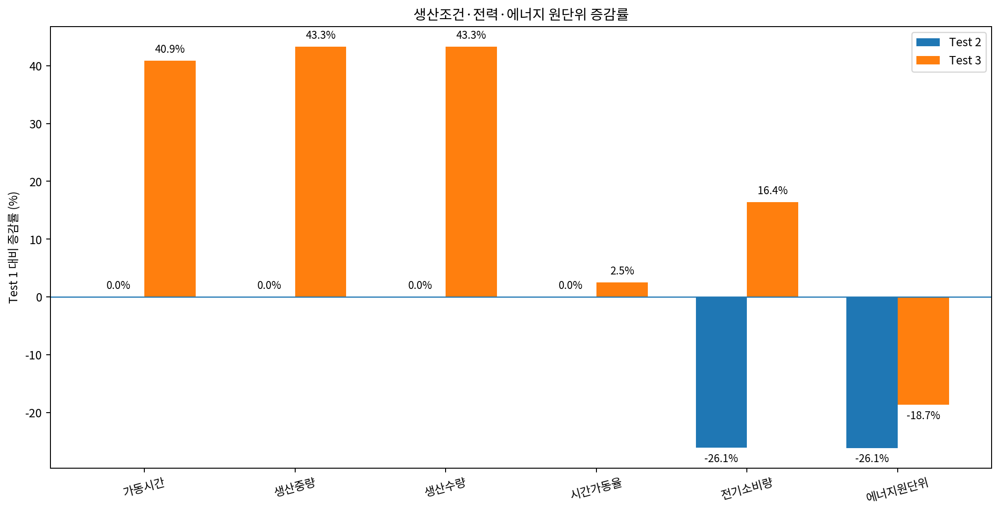
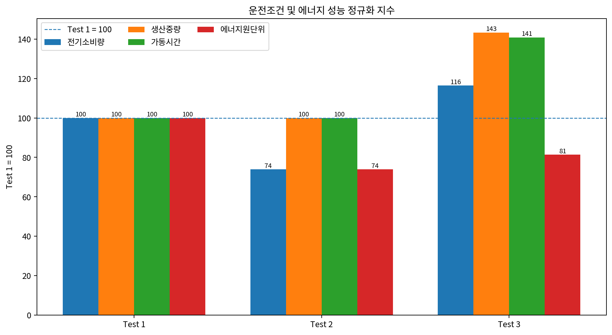

자동차부품 압출공정 3회 테스트 운전의 에너지 M&V:
생산조건 변화와 원단위 절감효과 검증
제조공정은 테스트마다 생산량과 가동시간이 달라질 수 있습니다. 이때 총 전력사용량만 비교하면 생산량 변화가 절감효과로 섞입니다. 이 사례는 비식별 처리한 대상 압출 LINE의 3회 Test & Adjust 데이터를 이용하여, 생산조건이 같은 경우에는 직접 비교하고 생산조건이 달라진 경우에는 생산중량·가동시간·전력 증감률과 에너지 원단위(kWh/kg)를 함께 비교해 개선효과를 설명하는 방법을 보여줍니다.
1. 사례 개요와 핵심 질문
국내 자동차부품 제조현장의 압출공정을 대상으로 3회 테스트 운전을 수행했습니다. 공개 CASE에서는 고객명, 공장명, 실제 설비·LINE ID와 정확한 운전일자를 비식별 처리하고 Test 1, Test 2, Test 3로 표기합니다.
분석에 사용한 변수는 가동시간, 전기소비량, 생산수량, 생산중량, 양품수량, 시간가동율, 에너지 원단위입니다. 동일 생산조건의 Test 1과 Test 2는 직접 비교가 가능하지만, Test 3은 생산규모와 가동시간이 증가했기 때문에 총 전력량의 단순 Before/After 비교만으로는 성능을 판단하기 어렵습니다.
생산조건이 조금씩 달라지는 제조공정에서 실제 에너지 효율 개선을 어떻게 구분하고, 테스트 결과를 과장하지 않으면서 어떤 수치로 증명할 것인가?
2. 분석 데이터와 Measurement Boundary
| 구분 | Test 1 | Test 2 | Test 3 |
|---|---|---|---|
| 가동시간 | 220 min | 220 min | 310 min |
| 전기소비량 | 402 kWh | 297 kWh | 468 kWh |
| 생산수량 | 12,000 | 12,000 | 17,200 |
| 생산중량 | 259.20 kg | 259.20 kg | 371.52 kg |
| 양품수량 | 12,000 | 12,000 | 17,200 |
| 시간가동율 | 91.67% | 91.67% | 93.94% |
| 보고서 산출 에너지원단위 | 1.5494 kWh/kg | 1.1443 kWh/kg | 1.2604 kWh/kg |
해석 주의
표의 전기소비량과 생산중량은 표시 자릿수가 반올림된 값입니다. 따라서 공개 표의 두 숫자를 다시 나누기보다, 원 분석에서 산출된 에너지 원단위 1.5494 / 1.1443 / 1.2604 kWh/kg를 성과평가 값으로 사용합니다.
3. 제조공정 테스트 M&V 절차
경계 고정
동일 압출공정과 동일 전력계측 범위를 유지합니다.
생산조건 확인
생산중량·수량·가동시간·시간가동율을 전력과 같은 분석단위로 정합합니다.
비교유형 구분
생산조건이 같은 Test는 직접 비교하고, 다른 Test는 정규화 비교로 전환합니다.
증감률 계산
Test 1 대비 생산조건과 전기소비량의 상대 증감률을 동시에 계산합니다.
원단위 정규화
kWh/kg를 이용해 생산규모의 영향을 줄이고 단위생산량당 에너지 효율을 비교합니다.
Evidence 구분
테스트 수준의 비교성과와 장기 Verified Saving을 분리하여 표현합니다.
4. Test 2 - 동일 생산조건에서 직접 확인한 개선효과
Test 1과 Test 2는 가동시간 220분, 생산중량 259.20kg, 생산수량 12,000, 시간가동율 91.67%로 주요 생산조건이 같습니다. 이 조건에서 전기소비량은 402 → 297kWh로 약 26.12% 감소했고, 보고서 산출 에너지 원단위는 1.5494 → 1.1443kWh/kg로 26.15% 개선되었습니다.
생산조건이 거의 동일하므로 생산량 보정에 대한 추가 가정이 가장 적습니다. 세 번의 테스트 가운데 Test 2는 개선효과를 가장 직접적으로 보여주는 비교 Evidence입니다.

5. Test 3 - 생산량이 늘었는데 총 전력도 늘었다면?
Test 3은 Test 1보다 생산중량과 생산수량이 각각 43.33%, 가동시간이 40.91% 증가했습니다. 총 전기소비량 역시 402 → 468kWh로 증가했지만 증가율은 16.42%에 그쳤습니다. 생산량 증가율이 전력 증가율보다 훨씬 컸기 때문에 단위 생산량당 에너지 원단위는 1.5494 → 1.2604kWh/kg로 18.65% 개선되었습니다.


6. 1차 기준 증감률로 보는 핵심 결과
| 항목 | Test 1 | Test 2 | Test 3 |
|---|---|---|---|
| 가동시간 | 0.00% | +0.00% | +40.91% |
| 생산중량 | 0.00% | +0.00% | +43.33% |
| 생산수량 | 0.00% | +0.00% | +43.33% |
| 시간가동율 | 0.00% | +0.00% | +2.48% |
| 전기소비량 | 0.00% | -26.12% | +16.42% |
| 에너지 원단위 | 0.00% | -26.15% | -18.65% |
또 하나의 중요한 결과는 Test 3의 원단위가 Test 2보다 약 10.15% 높다는 점입니다. Test 3은 기준 Test 1보다 개선되었지만, 최저 원단위를 보인 Test 2의 효율 수준을 고생산 조건에서도 재현하지는 못했습니다. 따라서 다음 최적화 질문은 “Test 2의 저원단위 운전조건을 Test 3 수준의 생산량에서도 재현할 수 있는가?”가 됩니다.
7. 무엇을 증명할 수 있고, 무엇은 아직 증명하지 못했는가?
동일 생산조건의 Test 2에서 원단위 26.15% 개선이 관찰되었습니다. 고생산 Test 3에서도 생산중량 증가율이 전력 증가율보다 크고 원단위가 Test 1 대비 18.65% 개선되었습니다. 세 테스트 모두 개선 방향을 지지합니다.
3개 테스트만으로 연간 Verified Saving, 공장 전체 절감률 또는 장기 지속효과를 확정할 수는 없습니다. 제품 Mix, LOT/BATCH, 기동·정지, 예열, 실제 비가동시간, 설비상태를 추가해 반복시험 또는 회귀 Baseline M&V로 확대해야 합니다.
Evidence 표현 원칙
이 CASE의 26.15%와 18.65%는 Test & Adjust 수준의 에너지 원단위 개선효과입니다. 장기 누적 kWh 절감량이나 연간 Verified Saving으로 확대 표현하지 않습니다.
8. 이 사례에서 배울 점
- 제조공정에서는 총 kWh 감소와 에너지성능 개선을 구분해야 한다.
- 생산조건이 같으면 직접 Before/After 비교가 가장 설명력이 높다.
- 생산량이 다르면 생산조건 증감률과 전력 증감률을 동시에 제시한다.
- kWh/kg와 같은 원단위는 생산규모 차이를 보정하는 1차 M&V 도구가 된다.
- 최저 원단위 Test와 고생산 Test를 분리해 다음 최적화 목표를 설정할 수 있다.
- 시간가동율 상승은 실제 비가동시간 감소인지 총 운전시간 증가인지 분리해 해석한다.
- 소수의 Test 결과는 장기 성과가 아니라 개선 방향과 재현성을 확인하는 Evidence로 관리한다.
- 반복 데이터가 축적되면 다변수 Baseline과 Adjusted Baseline M&V로 발전시킨다.
9. 다른 제조현장에 적용할 때 고려사항
| 검토항목 | 실무 적용 시 확인사항 |
|---|---|
| 제품·소재 Mix | 제품규격, 소재, 금형, 공정 Recipe가 달라지면 동일 Test군으로 직접 비교하지 않는다. |
| 생산량 분모 | kg, ton, ea, 양품수량 중 실제 에너지 Driver와 가장 가까운 분모를 선정한다. |
| 데이터 시간정합 | MES 생산구간과 EMS 전력 적산구간의 시작·종료 시각을 일치시킨다. |
| Measurement Boundary | 압출기 본체와 보조설비 포함범위를 Test 전후 동일하게 유지한다. |
| 가동·비가동 | 시간가동율만으로 추정하지 말고 가능하면 실제 정지·대기 Tag를 사용한다. |
| 품질조건 | 양품률, 불량, 재작업이 달라지면 생산성 향상을 에너지절감으로 오인할 수 있다. |
| 반복성 | 같은 조건의 Test를 여러 번 반복해 평균과 변동범위를 함께 평가한다. |
| Baseline 확대 | 운전조건이 충분히 다양해지면 생산중량·비가동시간·제품 Mix 등을 포함한 회귀 Baseline을 구축한다. |
| 성과 표현 | Test-level 개선율, Potential, Actual, Verified Saving을 명확히 구분한다. |
동일조건 Test → 원단위 정규화 → 생산조건 증감률 병행 → 반복시험 → 회귀 Baseline → Adjusted Baseline - Actual → 누적 절감량(kWh) 검증.
10. 공개 범위와 비식별 처리
본 CASE는 실제 제조공정 테스트 보고서와 Python 분석코드를 기반으로 재구성했습니다. 공개 페이지에서는 고객명, 공장명, 실제 LINE ID 및 정확한 운전일자를 제거하고 Test 번호로 대체했습니다. 정량값은 원 분석결과의 상대 비교구조를 유지하되, 본 결과를 다른 공정이나 공장 전체의 절감률로 확대 적용하지 않습니다.
생산량이 달라도 설명 가능한 제조공정 M&V 만들기
MES 생산데이터와 EMS 전력데이터를 같은 시간축으로 연결하면, 단순 전후비교를 넘어 생산조건을 고려한 에너지성능 비교와 Baseline M&V로 확장할 수 있습니다. 제조공정의 계측경계 설계, Baseline 구축, Python 분석, 절감성과 검증이 필요하면 상담·협력이 가능합니다.
전문 상담·협력 문의CASE STUDIES 전체 보기